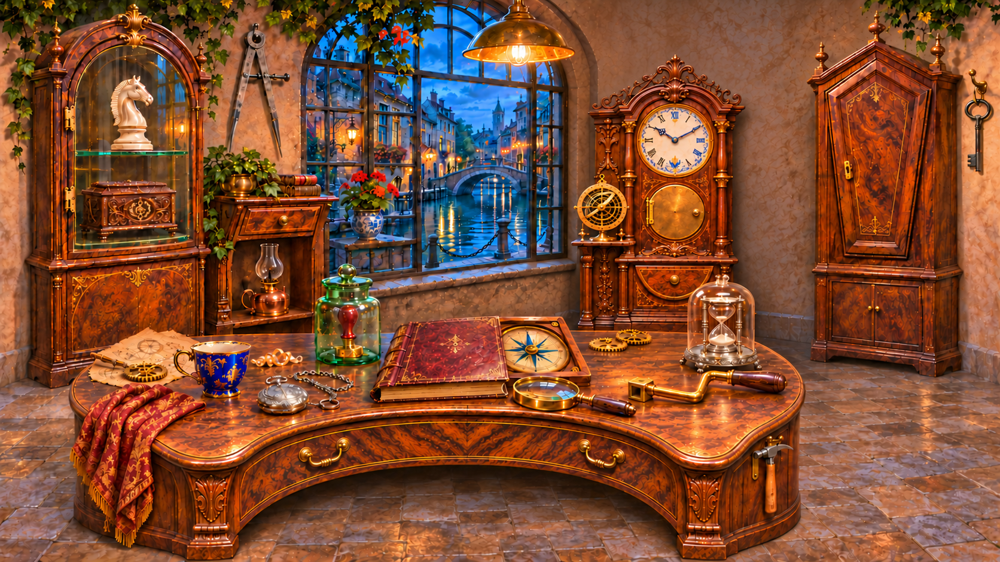
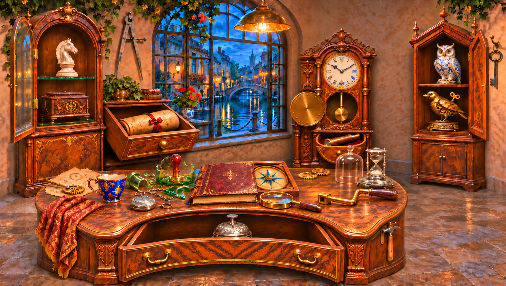

Фрагменты реального растра, 1:1


Во фрагментах только отображение пикселей исходных PNG и отдельные векторные указатели. Арт не дорисовывался кодом.
S-01: лампа погашена. S-03: узнаваемое горлышко J1 показано отдельно от №10 и №19. Полные новые M/A осмотрены автором; независимая повторная проверка ещё впереди.
Во фрагментах только отображение пикселей исходных PNG и отдельные векторные указатели. Арт не дорисовывался кодом.


Композиционные отступления S-02 не менялись и остаются вопросом человеческого G0. Семь прежних художественных признаков сохраняются предложением, не утверждённым контрактом.
Старые B/C — исторические локальные исследования. Они не обновлены и не служат доказательством сохранения новой детали горлышка после изъятия 10/19. Production-слои, игра и последовательности G1/G2 не создавались.
STOP CTO для точечной независимой повторной проверки C1. Художественного PASS Макса/Славы нет.